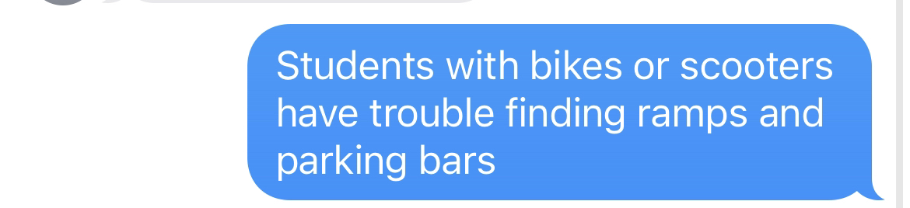
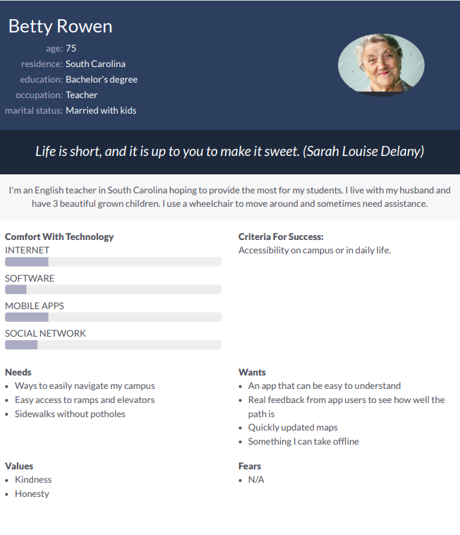
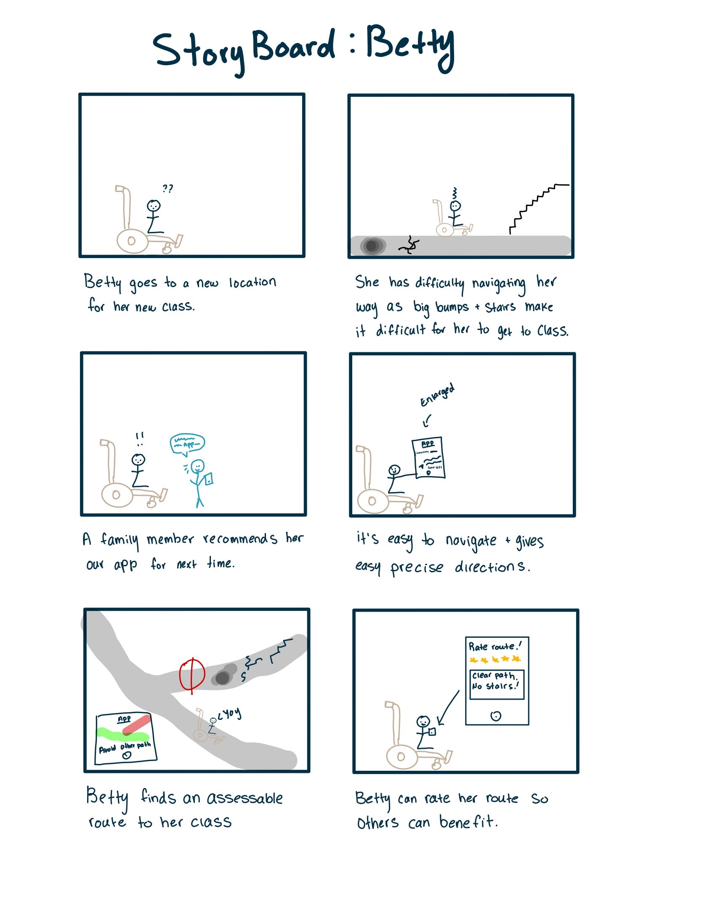
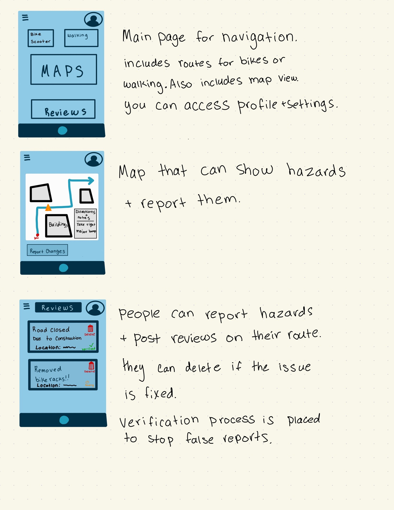

Affinity diagram
Our diagram features some app designs and problems that we would like to have such as, GPS and design festures, how to make the app, how will users use it and be protected, as well as what kind of people it's used for

Students with bikes or sccoters have trouble finding tamps and parking bars.
Our diagram features some app designs and problems that we would like to have such as, GPS and design festures, how to make the app, how will users use it and be protected, as well as what kind of people it's used for

Betty Rowen is a 75 old engligh teacher in South Carolina. She uses a wheel chair and her quote is Life is: Life is short, and it is up to you to make it sweet. (Sarah Louise Delany)

Betty is trying to go to a new classroom (panel 1), Her path to the classroom is filled with cracks and bumps and its hard to get to her destination with stairs (panel 2), a family recommends her our app (panel 3), Betty finds the app easy to navigate (panel 4), Betty gets to her classroom with ease and gets there faster(panel 5), Betty can then rate her route so others can see if the route has changed (i.e. road blocks or extreme potholes) (panel 6).

In my picture I included what we might have for our screens such as reviews, home, and what the map could look like. My other teammate Kennedy included other suggestions on how the screens could look like, such as map and entering destination, and more suggestions to the map features.